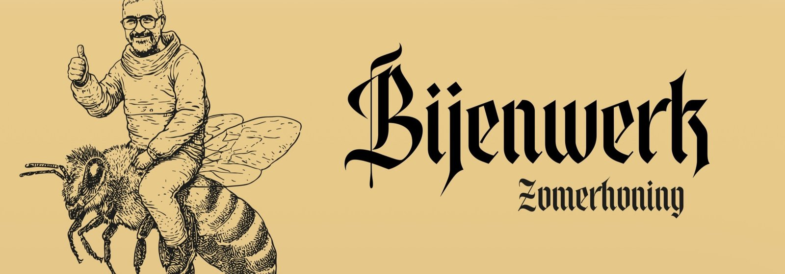
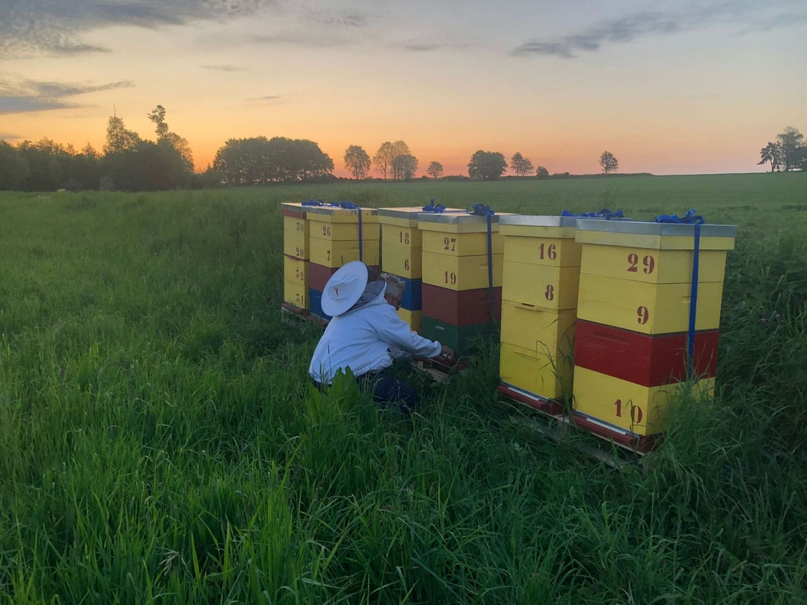
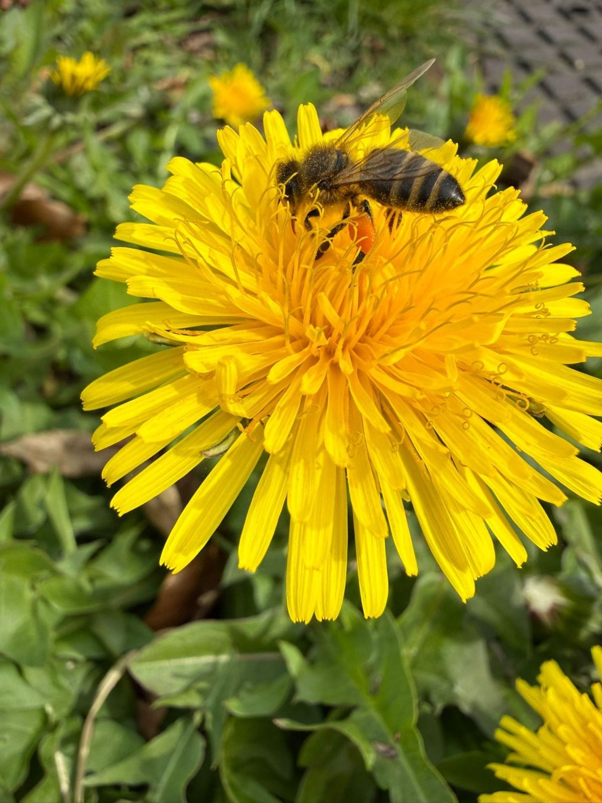
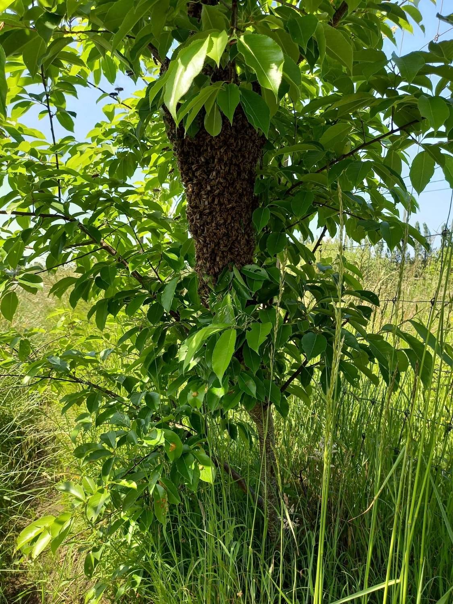
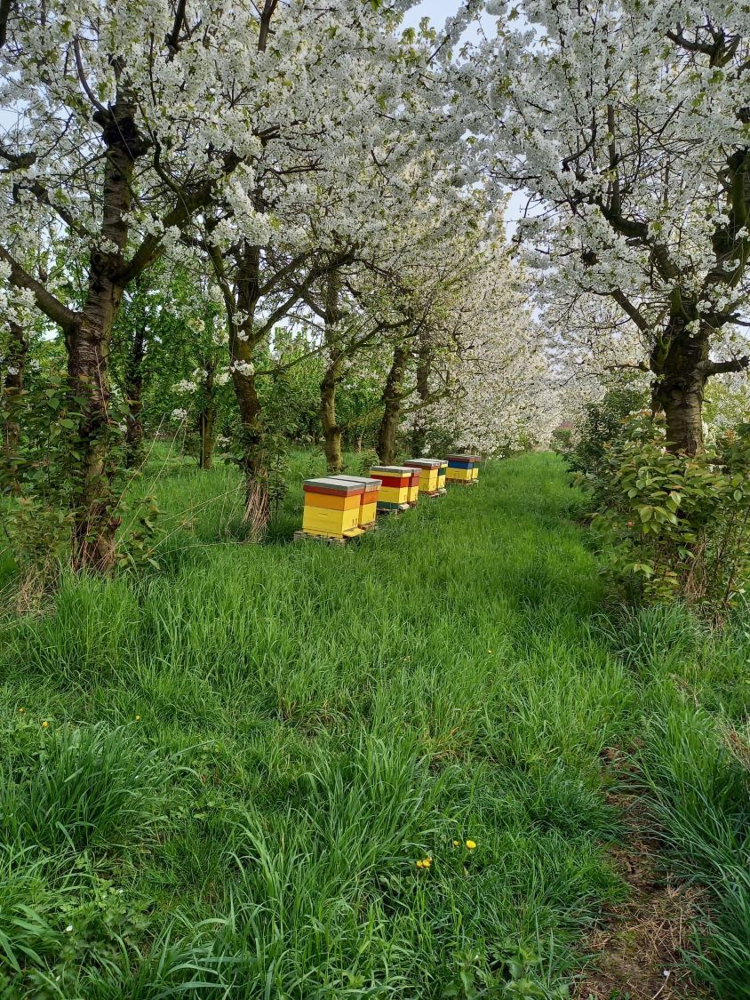

Lokale honing
Rauwe zomerhoning van eigen bijen, koud geslingerd en niet verhit. Zo blijven smaak en aroma volledig behouden.
Bekijk de honing →
Kleinschalig imkeren in Sint-Katelijne-Waver, met respect voor de bij en de natuur rondom.
Bijenwerk is een kleine imkerij met een handvol volken in en rond Sint-Katelijne-Waver. Geen grootschalige productie, wel aandacht voor elke kast.
We werken zo natuurlijk mogelijk: de bijen houden genoeg honing voor zichzelf, we gebruiken geen agressieve middelen en we kiezen standplaatsen met een rijk en gevarieerd bloemenaanbod. Want gezonde bijen hebben bloemen nodig, en bloemen hebben bijen nodig.

Rauwe zomerhoning van eigen bijen, koud geslingerd en niet verhit. Zo blijven smaak en aroma volledig behouden.
Bekijk de honing →
We plaatsen onze bijenkasten tijdelijk bij uw boomgaard of teelt, precies wanneer de bloei het nodig heeft.
Meer over bestuiving →
Een tros bijen in uw tuin? Geen paniek. We komen de zwerm veilig en diervriendelijk ophalen.
Zwerm melden →Fruitbomen en veel teelten zijn afhankelijk van insecten voor een goede vruchtzetting. Tijdens de bloeiperiode brengen we onze kasten naar uw perceel en halen we ze nadien weer op.

In het voorjaar splitst een bijenvolk zich soms op. De oude koningin vertrekt dan met duizenden bijen en hangt tijdelijk als een tros aan een tak, haag of gevel. Dat ziet er indrukwekkend uit, maar zwermende bijen zijn meestal erg vreedzaam.
Let op: wespen en hommels zijn geen honingbijen. Twijfelt u? Stuur gerust een foto.
Honingbijen zijn maar een deel van het verhaal. Ook wilde bijen, hommels en vlinders verdienen een plek.
Een beperkt aantal volken, zodat er genoeg voedsel blijft voor wilde bestuivers.
Geen verhitte honing, geen onnodige ingrepen. De bijen bepalen het ritme.
We moedigen bloemrijke tuinen en bermen aan. Elke bloem telt.